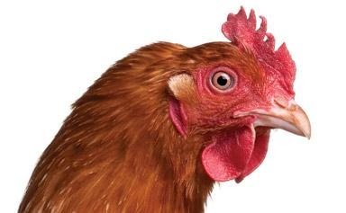

Monday, July the 29th, 2013
back to: title, date or indexes
On Farming Today on BBC Radio 4 this morning, I heard the following piece of rustic wisdom, or perhaps it was a spell or incantation:
I see the chicken—good thing happens.
I have decided to test this by taking the first opportunity that presents itself to look at a chicken. I will then wait for something good to happen, and—whatever the eventuality—will report back, in vivid detail.
